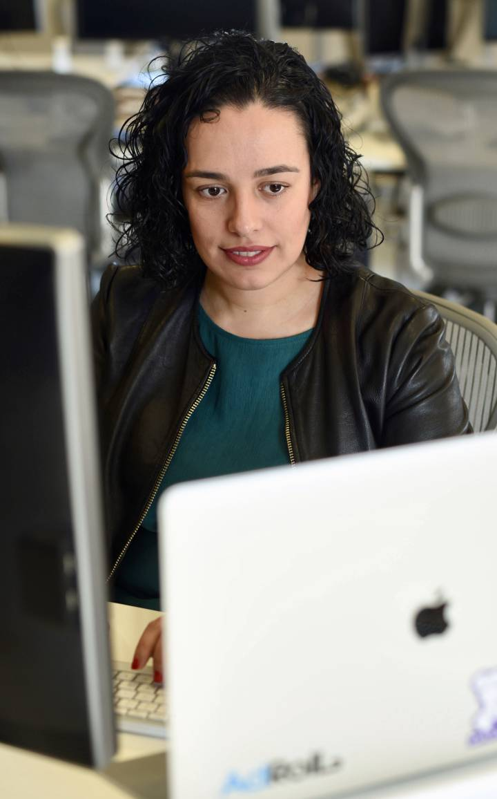

Míriam Pena, una programadora en la cima de Silicon Valley
La ingeniera gallega destaca por sus conocimientos en uno de los lenguajes de programación minoritarios y con más demanda
ROSA JIMÉNEZ CANO
San Francisco 22 FEB 2018 - 09:56
Se hizo el pasaporte para su primer trabajo. Su abuela no entendía muy bien por qué se iba tan lejos. Tampoco entiende muy bien por qué sigue al otro lado del mundo, pero ella tiene claro que aquí es donde su labor tiene crecimiento e impacto. Míriam Pena, nacida en la localidad de Bueu, en Pontevedra, prefiere no dar su edad. Sabe que es uno de los requisitos de este medio, pero considera que guardar ese dato es uno de los aspectos que deben cambiar. “No le di importancia hasta que llegué a Estados Unidos y me di cuenta de que preguntar por el barrio, el colegio o detalles similares pueden definir tu etnia y llevar a discriminación, también de género”.
A finales de 2017 recibió un reconocimiento inesperado: fue destacada como una de las ingenieras más inspiradoras para seguir en 2018. Desde entonces, se ha comprometido a ser más visible y mostrar tanto su labor, como la de otras mujeres que se dedican a la programación.
Desde la azotea de AdRoll, la empresa donde trabaja, en pleno barrio de Mission y muy cerca de SOMA, los vecindarios con más actividad creativa y tecnológica de San Francisco, explica cómo llegó hasta la capital de la innovación, y el reconocimiento del que goza.
Pena es una rareza. Ingeniera Informática por la Universidad de A Coruña, se especializó muy temprano en Erlang, un lenguaje de programación minoritario. Esta decisión ha marcado su carrera. Erlang se creó hace más de 30 años, como un proyecto de Ericsson en Suecia, y sigue siendo uno de los lenguajes de programación usados por corporaciones y startups por igual.
Su primer empleo fue en Nomasystems, una empresa gallega con vocación internacional. “Eran pioneros en aplicaciones móviles incluso antes de que fuese algo popular”, destaca. Entró para participar en un proyecto de industria solar para recogida y gestión de datos. Esa es precisamente una de las virtudes del lenguaje que maneja, la capacidad de trabajar con cantidades ingentes de datos, en bloque.
En Nomasystems le ofrecieron irse a Egipto. Ella nunca había salido de España. “Me recogieron con chófer. Era Ramadán y yo no sabía ni cómo vestirme con tanto calor. Me trataron muy bien. Sentí que podía hacerlo bien y fue mi primera experiencia laboral hablando siempre en inglés”, recuerda. De ahí se fue a Suecia y descubrió el invierno del norte de Europa, otra experiencia para no olvidar: “En diciembre era de noche todo el tiempo y vas con dos capas de ropa debajo. El cambio cultural y social siempre enriquece. Aprendes de otros métodos y formas. En España se ve mal si te vas a casa antes de las siete de la tarde. En Suecia, a las tres, todos fuera”.Ahí fue cuando dio un gran salto en su capacidad técnica, sentada junto a uno de los creadores de Erlang: "Aprendí la importancia de la calidad del código. Crecí mucho en estructura y calidad”.
Volvió a España para sumarse al equipo de Tuenti, para crear el chat de grupo. Fue uno de los grandes aciertos, la sensación entre los entusiastas usuarios que tenía la red social líder en España en aquello momento. "Lo recuerdo con cariño por la especial conexión que teníamos con los usuarios. Sentías que estaban ahí. Cuando veías que usaban lo que creabas era gratificante. Si rompías algo, enloquecían en Twitter”.
Llegó a San Francisco hace dos años, desde Dublín, donde trabajaba en la misma compañía, AdRoll, líderes en retargeting, como se llama en el sector a la publicidad basada en las búsquedas del usuario.
¿Qué hace de Erlang algo tan especial? “Es un lenguaje funcional. No orientado a objetos. El problema de Erlang es que tiene una curva de aprendizaje muy alta. Es muy bueno para trabajar a escala, para gestionar millones de peticiones. Se usa menos código y tiene un consumo menor”. Por eso no extraña que no solo Tuenti lo utilizase, sino también WhatsApp. Pena solo le ve ventajas: “Gestionamos miles de pujas por publicidad en segundos, en todo el mundo. Se debe responder en milisegundos. Con este volumen no es solo necesario tomar la decisión buena, sino también tomarla rápido”.
A lo largo de su carrera ha ido aprendiendo algunos consejos para mejorar y seguir motivada: “Es mejor moverse por proyectos y aprovechar las oportunidades. Buscar un proyecto que te aporte y seguir en esa dirección. Para escoger algo, me importa mucho el equipo con el que trabajo. Procuro que sea con gente que admiro, de la que puedo aprender. Si no funciona, muévete, pero no te quejes. En dos años deberías tener el dominio de lo que haces y cambiar. Si pasas más de cuatro en algo ya estás acomodado”.
De Silicon Valley destaca muchas ventajas, como la formación en habilidades que no se suelen trabajar tanto, la asistencia a conferencias… “Me gusta este lugar, porque es donde se está inventando el futuro. Te cruzas con gente que está haciendo productos que nos van a cambiar la vida para siempre. Hay aplicaciones para todo. Me gusta el clima de emprendimiento, se notan las ganas. Admiro la mentalidad de estar dispuestos a probar cosas”, subraya. Al mismo tiempo, destaca algunos valores de España: “Tenemos que luchar más y creérnoslo porque hay talento. En España la educación es muy buena, aquí no suele ser así. Tenemos mucho potencial. Hace 50 años montar una empresa era muy caro. Con talento, iniciativa y creatividad, además de software, se pueden hacer grandes cosas. El coste de vida en España es mucho más bajo. Pero sí hace falta invertir en software desde edades temprana. Aquí se ve como una cuestión de Estado”.
A raíz de aparecer entre las programadoras más destacadas, ha tomado conciencia de lo necesaria que es la visibilidad para las mujeres: “En mi empresa hace un año las mujeres éramos un 17%, ya hemos pasado al 23%. El esfuerzo por mejorar se nota. Hay programas de Women in Tech, también de liderazgo, para aprender habilidades de marca personal, hablar en público o negociar. Empiezan a verse más mujeres en la industria pero falta diversidad, más todavía. Las mujeres suelen estar en frontend, en la parte que se ve de la web, pero no en backend, en la trastienda como me gusta decir. En Erlang apenas el 10% somos mujeres”.
Y añade: “Llevo 10 años en esto y no me falta trabajo. En general hay una demanda no cubierta y se paga muy bien. La barrera de entrada es alta pero el mantenimiento es bajo. No es como el que desarrolla en un lenguaje que cambia cada año. Además, es fácil poder trabajar en remoto”, sostiene con entusiasmo contagioso.